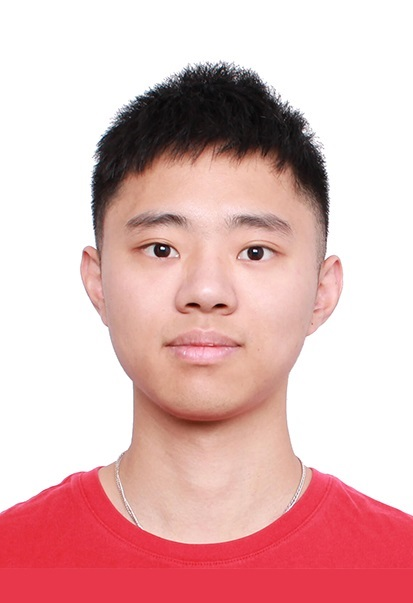

|  | Wuqian Tang
Ph.D. Student |
I am currently a first-year Ph.D. student at Department of Computer Science, National Tsing Hua University (NTHU), under the supervision of Prof. Chun-Yao Wang since Fall 2023.
Placement and Routing Optimization
Logic Synthesis Optimization
Various Algorithms in Electronic Design Automation (EDA)
[C3] Wuqian Tang, Chuan-Shun Huang, Yung-Chih Chen, Yi-Ting Li, Shih-Chieh Chang, Chun-Yao Wang, “Model Reduction Using a Hybrid Approach of Genetic Algorithm and Rule-Based Method”, IEEE International System-on-Chip Conference (SOCC), Dresden, Germany, Sep. 16-19, 2024.
[C2] Chuan-Shun Huang, Wuqian Tang, Yung-Chih Chen, Yi-Ting Li, Shih-Chieh Chang, Chun-Yao Wang, “An Efficient Approach to Iterative Network Pruning”, IEEE International VLSI Symposium on Technology, Systems and Applications (VLSI-TSA), Hsinchu, Taiwan, Apr. 22–25, 2024.
[C1] Wuqian Tang, Yi-Ting Li, Kai-Po Hsu, Kuan-Ling Chou, You-Cheng Lin, Chia-Feng Chien, Tzu-Li Hsu, Yung-Chih Chen, Ting-Chi Wang, Shih-Chieh Chang, TingTing Hwang, and Chun-Yao Wang, “A Hybrid Approach to Reverse Engineering on Combinational Circuits”, IEEE/ACM Proceedings Design, Automation and Test in Europe (DATE), Valencia, Spain, Mar. 25–27, 2024.
Ph.D. Student, Computer Science, National Tsing Hua University, Sep. 2023 - Present
M.S., Computer Science, National Tsing Hua University, Sep. 2021 – Jul. 2023
B.S., Computer Science and Information Engineering, Ming Chuan University, Sep. 2017 – Jun. 2021
Assistant Researcher, The Chinese University of Hong Kong Shenzhen Research Institute, Jan. 2024 - Mar. 2024
“Qilin Cup” (top-1 from all 400+ teams) in Integrated Circuit EDA Elite Challenge (CSE-news), 2023
Honorable Mention (4th Place) in CAD Contest @ ICCAD, 2023
Third Place in EDAthon, 2023
First Place Award in CAD Contest @ ICCAD, 2022
National Tsing Hua University Mainland China Student Scholarship, 2021 – 2024
Silver Award in International Collegiate Programming Contest (ICPC), Asia Taipei-Hsinchu Site, 2020
Ming Chuan University Yingzhao Excellent Student Scholarship, 2020